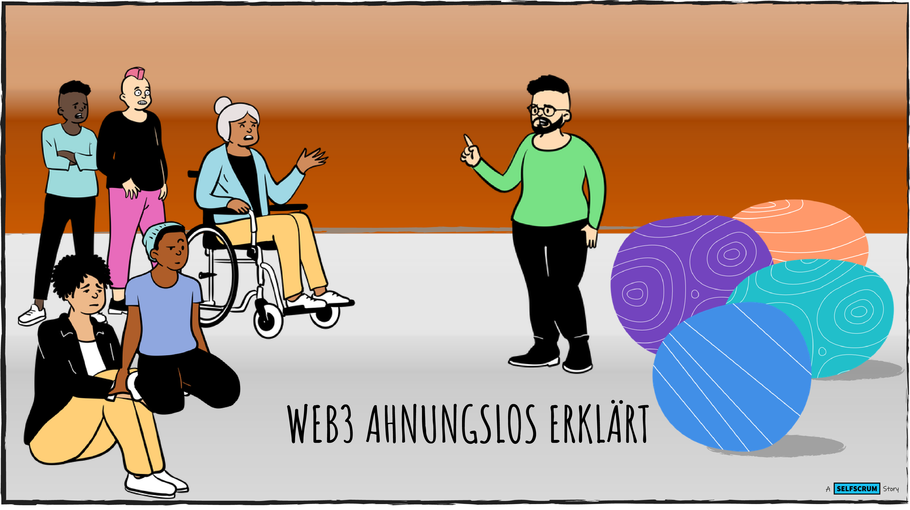

SELFSCRUM goes Crypto

Warum?
- Web3 ist eine junge Technologie.
- Hierzulande haben viele kein Wissen darüber.
- Das wollen wir ändern.
Format
- W1-4: git und Markdown in einem eigenen Beispiel
- W5-8: git Konzepte, Tools und Lern-Setting
- W9-12: lernOS Guide schreiben
...oder?
Woche 1 - Verbinden

Motivation
- Was lernst du gerade?
- Warum bist du hier?
- Was kennst du schon?
- Was ist dein Projekt?
- ogy.de/git-for-kids
Die Bausteine

Die besten Ressourcen
Markdown
- Freundliches Tutorial: ogy.de/md-tutorial
- Referenz: ogy.de/md-referenz
- Deutsche Übersetzung: ogy.de/md-deutsch
–
Git
- Einfacher Einstieg: ogy.de/git-einstieg
- Freundlicher Video-Kurs: ogy.de/git-video
- Referenz: ogy.de/git-referenz
Woche 2 - Grundlegendes

Today
- Checkin - was hast du letzte Woche gelernt? (2min)
- Nextcloud
- Git Bash installieren
- Einen lokalen Git-Zyklus durchlaufen
- Checkout - was machst du nächste Woche? (1min)
git Bash
- Unser "Schweizer Taschenmesser"
- Windows: gitforwindows.org
- Mac: downloads.digitaltrends.com/git/mac
Git Zyklen

Woche 3 - Remote Work

Today
- Checkin - was hast du letzte Woche gelernt? (2min)
- Einen Github Account eröffnen
- Einen remote Git-Zyklus durchlaufen
- Checkout - was machst du nächste Woche? (1min)
Github

- Die größte Open Source Community Plattform
- 40 Millionen Benutzer, 44 Millionen Projekte
- State of the Octoverse
Git Repository Cheat Sheet

Woche 4 - Branches

Today
- Checkin - was hast du letzte Woche gelernt? (2min)
- Branches kennenlernen: https://learngitbranching.js.org
- Das weitere Vorgehen planen
- Checkout - was machst du nächste Woche? (1min)
Woche 5 - Mindmap für den Guide

Woche 6 - Den Guide bauen

TODAY
- Checkin - Seid ihr noch dabei? (2min)
- Hugo als Basis
- Checkout - was machst du nächste Woche? (1min)
Woche 6 - Bauplan
- Struktur: Unsere Mindmap
- Träger: Hugo Repo
- Prozess: Branches und Pull Requests
- Inhalte: Wer tut was?
Woche 9 - Struktur und Inhalt

Today
- Checkin - was hast du letzte Woche gelernt? (2min)
- Unsere Dokumentationsstruktur
- Noch offene Inhalte
- Checkout - was machst du nächste Woche? (1min)
Git Zyklen